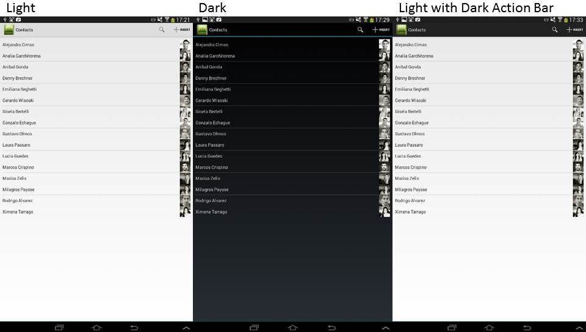

Specifies the base colors used in the application layouts.
Values
Description
Through this property, you can determine to use a dark style or a light one in applications. It applies to the background, fonts colors and application bar color. The Theme for Smart Devices object can be set with all the classes in order to customize the application design. Important: This property is visible only when the object has its Main program property set to True. Run-time/Design-timeThis property applies only at design-time. Samples
 How to apply changesTo apply changes made by this property, do a Build All. Scope Objects: Menu for Smart Devices, Panel for Smart Devices |
| Backlinks | |
| Android Base Style property (GeneXus 16 Upgrade 5) | |
| ApplicationBars theme-class for Smart Devices | Enable Preferred Color Scheme property |
| Smart Devices Main object properties |